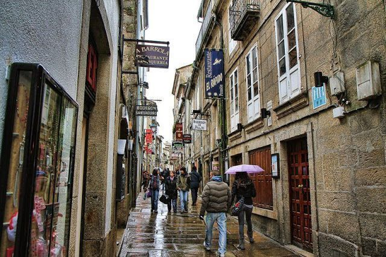
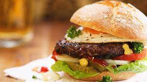

Rutas en todo tipo de países tanto europeos como de américa.
La primera comida destacada de esta semana proveniente de Estados Unidos tenemos la pizza al estilo california
De la mano de la gastronimia inglesa tenemos como destacado el característico "fish and chips"
Como no, esta semana tenía que aparecer algun plato de la famosa comida mediterránea y como podemos ver se trata del famoso sandwich mediterraneo de Málaga
Siguiendo con la comida europea tenemos una famosa tabla de quesos creada por el chef frances Jose Fuentes, ganador del premio a la gastronomia láctea de 2018
Para finalizar con la selección gastronómica de esta semana tenemos los clásicos pero deliciosos espagueti carbonara

Aparte de nuestra gran cantidad de comidas y variedad gastronómica tanto local como mundial, también contamos con nuestra sección de dietas donde tenemos diferentes tipos de dietas según tus intereses:
Para contactarnos en el caso de que quiera aportar información a la guía puede hacerlo mediante correo electrónico: comidasporelmund@gmail.com
Página reconocidad mundialmente por el libro gastronómico de el chef Jose Fuentes portador de tres estrellas michelin.